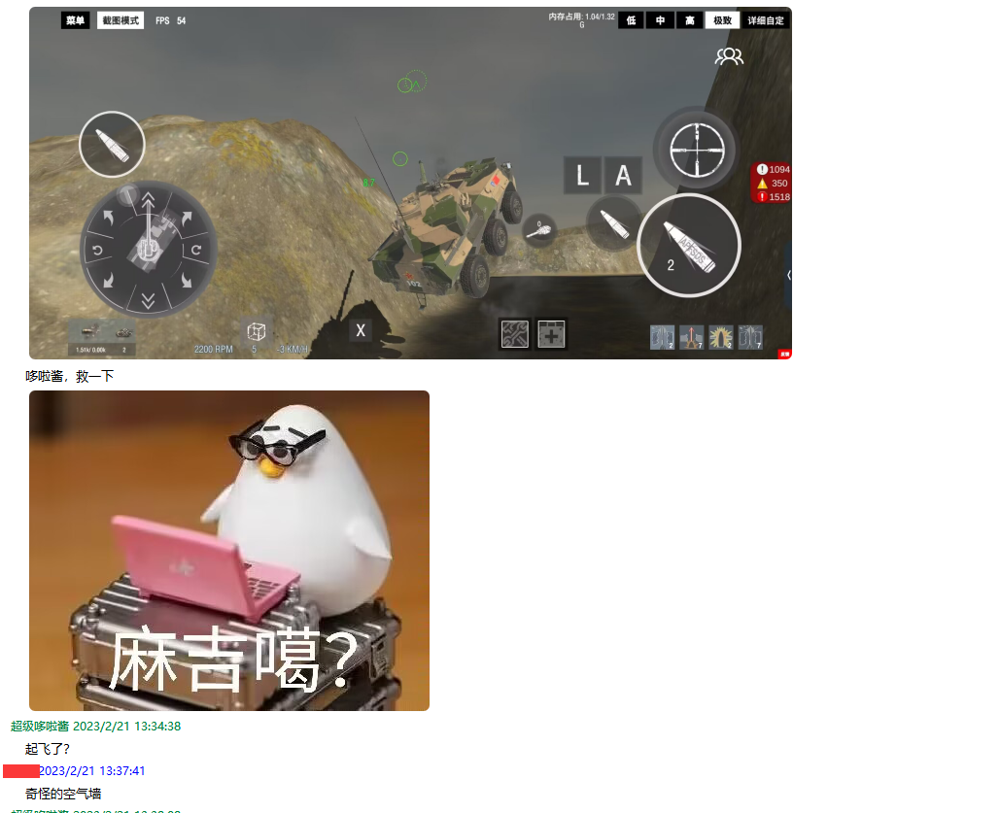
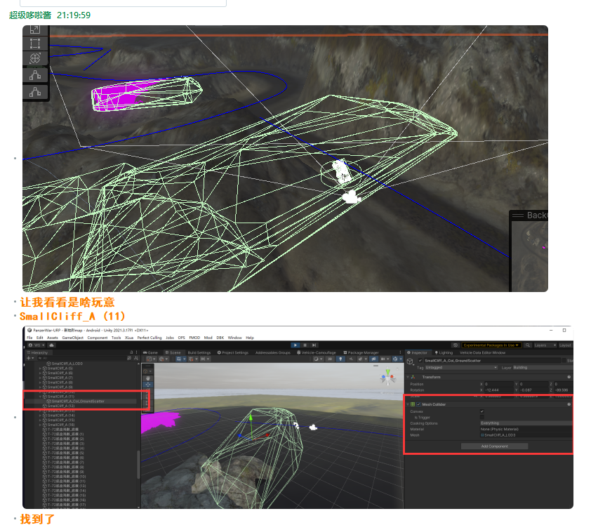
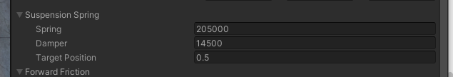
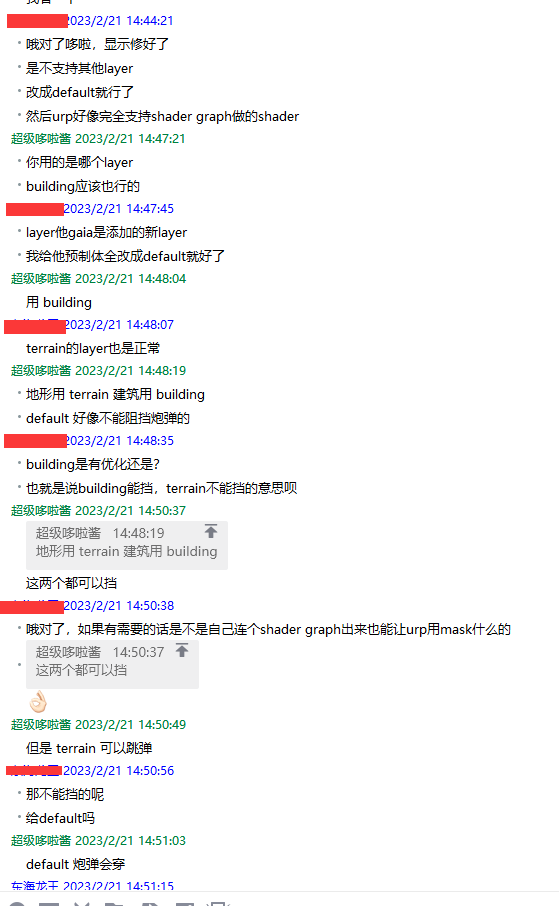
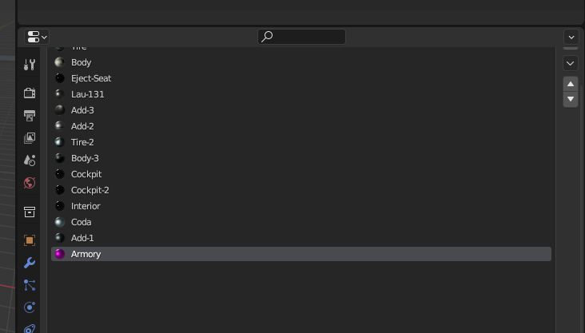

Modding issue archive
中文 | English
These issues and troubleshooting steps come from older versions of the tools. The screenshots show the settings and menu locations from those versions.
1. Map invisible collision
Symptom: An invisible collision exists somewhere on the map, blocking objects or shell trajectories in that area.
Check used at the time: Select all objects and look for a green collision box covering that area; check whether an extra Mesh Collider was duplicated, or whether the Mesh Collider was placed somewhere other than the visual model.


2. Slow suspension rebound, rolling over when turning
Symptom: Suspension rebounds slowly and the vehicle tends to roll over while turning.
Check used at the time: Check the Wheel Collider settings. The screenshot below was called the "default suspension configuration" in the old document and is a historical example only.

3. Map shell collision and render layers
The original guide recorded its map shell collision and render layer settings in this screenshot.

4. Duplicate materials in Blender
Symptom: Duplicate materials appear after duplicating objects in Blender.
The original guide compared the materials produced by two duplication methods. Check the keymap and resulting materials in your own Blender version.
Historical screenshot: duplicate materials after using ctrl c and ctrl v.

Historical screenshot: result of duplicating an object with shift + d.
